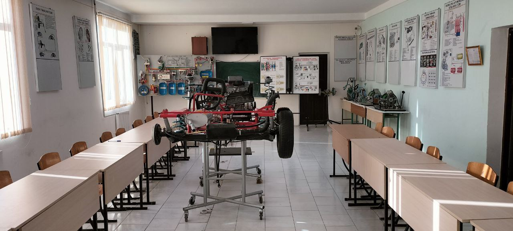

Toshkent tumani 2- son kasb- hunar maktabi togrisida MA'LUMOT
Toshkent tumani 2- son kasb- hunar maktabi Ozbekiston Respublikasi Prezidentining 2019
yil 6 sentyabrdagi Professional ta'lim tizimini yanada takomillashtirishga doir qoshimchа chora
tadbirlar to'g'risidagi Neo PF- 5812 sonli farmoni ijrosini ta'minlash maqsadida Ozbekiston Respublikasi
Vazirlar Mahkamasining 2020 yil 7 avgustdagi O'zbekiston Respublikasida uzluksiz boshlangich, orta va
orta maxsus professional ta'lim tizimini tartibga soluvchi normativ- huquqiy xujjatlarni tasdiqlash
to'g'risidagi No 466 sonli qarori asosida 2020 yil sentyabr oyida tashkil topgan.Kasb- hunar maktabida
ХОzirgi kunda 7 ta yo`nalish mavjud.
Raqamli axborotlarni qayta ishlash ustasi
Tikuvchi
Oshpaz - qandolatchi
Bank nazoratchisi
Sartarosh (Model'er)
Avtomobil dvigatellarni tashxislash va tamirlash

Sotuvchi, nazoratchi, kassir
Kasb- hunar maktabida ta'lim olish 9- sinf bitiruvchilari hisobidan
shakllantirilgan guruhlarda 2 yillik umumta'lim va mutaxassislik fanlarining integrasiyalashgan
dasturlari asosida kunduzgi ta'lim shaklida amalga oshiriladi.
Kasb- hunar maktabi zamonaviy kutubХОna, zamonaviy faollar zali, sport
zal
va stadion,
oshХОna,
kasbiy
yo`nalishlari bo`yichа zamonaviy ustaХОnalarga ega. O'quvchilar kasb- hunarlarini egallash davomida
Koreya Respublikasidan keltirilgan jiХОzlardan
foydalangan
mashg`ulotlarini
tomonidan o'tiladi.
holda
amaliy
bajarishadi. Barchа
mashg'ulotlar mutaxassis o`qituvchilar
Bitiruvchilarni kelajakda ish bilan ta'minlash kafolatlanadi.